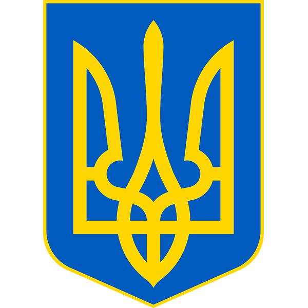
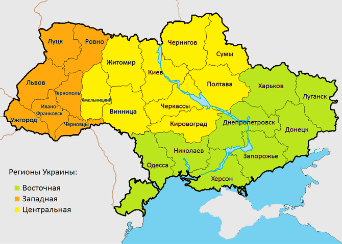
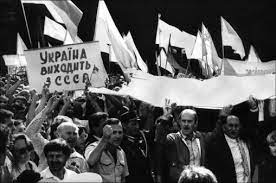
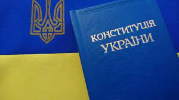

Походження назви
Слов'янське слово «Україна» вперше згадується в Київському літописному зводі за Іпатіївським списком під 1187 роком. Ним окреслювали терени Переяславського князівства, що входило до історичного ядра Русі поруч із Київським і Чернігівським князівствами. Це слово також зустрічається в руських літописах під 1189, 1213, 1280 і 1282 роками, позначаючи Галичину, Західну Волинь, Холмщину й Підляшшя. У литовських і польських хроніках та офіційних документах XIV—XVII століття «Україною» в широкому значенні називали руські землі Галичини, Волині, Київщини, Поділля й Брацлавщини, а у вузькому — територію середнього Подніпров'я. Таке ж двояке значення цього слова зберігалося й із середини XVII століття, після постання руської держави Війська Запорозького.
У зв'язку з входженням частини земель Русі до складу Московського царства, а згодом і Російської імперії, слово «Україна» закріпилося за регіоном Подніпров'я; ним також позначали Слобожанщину. Після перейменування Московського царства на Російську імперію 1721 року, українські землі почали називати «Малоросією». У другій половині XIX століття — початку XX століття, під впливом національного руху руської інтелігенції, назва «Україна» набирала значення руської етнічної території, а сам етнонім «русини» був витіснений етнонімом «українці». 1917 року була проголошена перша держава, яка використала слово «Україна» у своїй офіційній назві, — Українська Народна Республіка.
Етимологія слова «Україна» достеменно не відома. Згідно з теорією, якої дотримуються більшість українських дослідників, «Україна» походить від слів «країна» чи «край», тобто «у» означає «рідний», «свій». Таким чином «україна» — антонім слова «чужина».. Згідно однієї з інших теорій, що утворилася під впливом польської та російської історіографії, воно означає «околицю» (рос. окраину) чи «прикордоння».
У попередніх століттях для позначення території України вживали слова «Скіфія», «Сарматія», «Русь», «Рутенія», «Росія», «Малоросія», «Військо Запорозьке», «Гетьманщина» тощо.
Географія
Україна розташована в південно-східній частині Європи[4]. Вона має спільні сухопутні державні кордони з Білоруссю на півночі, з Польщею на заході, зі Словаччиною, Угорщиною, Румунією і Молдовою на південному заході й із Росією на сході. Південь України омивається Чорним та Азовським морями. Морські кордони вона має з Румунією і Росією.
Загальна площа України становить 603 700 км², вона становить 5,7 % території Європи й 0,44 % території світу. За цим показником вона є другою за величиною серед країн Європи після Росії (або найбільшою країною, яка повністю лежить у Європі). Площа виключної морської економічної зони України становить 72 658 км². Код країни за системою ISO 3166-1-alpha-2 — UA[27]. Територія України витягнута із заходу на схід на 1316 км і з півночі на південь на 893 км, лежить приблизно між 52° 20′ та 44° 23′ північної широти й 22° 5′ і 41° 15′ східної довготи.
- Крайній північний пункт — село Грем'яч(урочище Петрівське) Чернігівської області.
- Крайній південний пункт — смт Форос Автономної Республіки Крим.
- Крайній західний пункт — село Соломоново Закарпатської області.
- Крайній східний пункт — село Рання Зоря Луганської області.
- Географічний центр України розташований на північній околиці села Мар'янівка Звенигородського району Черкаської області[28].
- Центр Європи — Згідно з однією з методик вимірювання, географічний центр Європи розташований на території України, неподалік міста Рахів Закарпатської області.
Найбільшими чорноморськими портами є Одеса, Чорноморськ, Херсон, Севастополь, азовськими — Маріуполь, Бердянськ, Керч.
Загальна протяжність кордонів 6993 км, із них сухопутних 5638 км. Довжина морської ділянки кордону: 1355 км (Чорним морем — 1056,5 км; Азовським морем — 249,5 км; Керченською протокою — 49 км).
Незалежність
Проголошення незалежності, президенства Кравчука та Кучми
16 липня 1990 року Верховна Рада УРСР прийняла Декларацію про державний суверенітет[116], що поклало початок конфронтації між урядами СРСР і УРСР. 19 серпня 1991 року в Москві комуністи-консерватори здійснили невдалу спробу державного перевороту, аби відновити владу партії. Після провалу путчистів, 24 серпня 1991 року, Верховна Рада УРСР прийняла Акт проголошення незалежності України[117]. Цей акт підтримало 90,32 % українців на Всеукраїнському референдумі 1 грудня 1991 року. Це ознаменувало появу незалежної держави Україна. Того ж дня відбулися перші президентські вибори, на яких переміг голова Верховної Ради України, у 1988—1990 роках — завідувач ідеологічного відділу, секретар ЦК КПУ, Леонід Кравчук. 8 грудня у Біловезькій пущі і 21 грудня в Алма-Аті лідери України, Білорусі та Росії підтвердили розпад СРСР і утворили Співдружність Незалежних Держав (СНД)[118]. Хоча Верховна Рада України ніколи не ратифікувала вступ, тобто Україна ніколи не була членкинею СНД.[119]
Україна спочатку розглядалася як республіка зі сприятливими економічними умовами, тим не менш, країна пережила глибший економічний спад, ніж деякі з інших колишніх радянських республік. Під час рецесії Україна втратила 60 % свого ВВП з 1991 року по 1999 рік[120][121] і постраждала від п'ятизначних темпів інфляції[122]. Невдоволені економічними умовами, а також кількістю злочинів і рівнем корупції, українці протестували і влаштовували страйки.
У 1996 році була ухвалена Конституція України, що сприяло стабілізації політичної системи і в той же час зосереджувало більшість владних повноважень у руках тодішнього президента Леоніда Кучми. У вересні того ж року було проведено грошову реформу і введено нову валюту — гривню. Українська економіка стабілізувалася до кінця 1990-х років, а з 2000 року почало відбуватись її зростання, в середньому на 7 % щорічно.
Державний устрій
Україна — унітарна демократична парламентсько-президентська республіка і має багатопартійну політичну систему. В Україні діють такі основні інститути державної влади: Президент, законодавча, виконавча та судова влади. Виконавча влада представлена Кабінетом Міністрів, центральними органами виконавчої влади та органами виконавчої влади на місцях. Законодавчий орган — парламент — називається «Верховна Рада України». Судова влада представлена Конституційним Судом України та судами загальної юрисдикції — системою загальних і спеціалізованих судів різних інстанцій.
Конституція України
Після проголошення Україною своєї незалежності 24 серпня 1991 року і прийняття нею своєї Конституції 28 червня 1996-го вона стала президентсько-парламентською республікою. Проте 8 грудня 2004 року, на прохання «політичної сили прем'єр-міністра Віктора Януковича», депутати ввели радикальні зміни до Конституції: за них проголосували 402 депутати, в тому числі Партія регіонів, Комуністична партія і Соціалістична партія. Україна стала парламентсько-президентською республікою.
Коли Янукович став президентом, він призначив нових суддів Конституційного суду, і 30 вересня 2010 року Конституційний суд прийняв рішення про скасування Конституції 2004 року і повернення до Конституції 1996 року (внаслідок чого політична система України обрала більш президентський вигляд).
21 лютого 2014 року відновлено дію Конституції 2004 року.
Культура
Відомий дослідник української культури І. Огієнко зазначав, що українській культурі з самого початку були властиві відвертість світу, відсутність ксенофобії (боязні чужого) і гуманізм. «Споріднена праця» (за Сковородою) і самопізнання, свобода, заради якої не шкода розлучитися з благополуччям, обмеження життєвих потреб, надання переваги духовному над матеріальним — ось ті шляхи і рецепти щастя, яких дотримувались і які пропагували провідні українські мислителі.
Як і українська культура, українське мистецтво бере свої витоки з мистецтва Русі, а протягом історії розвивалося у руслі як європейських так і, пізніше, російських тенденцій. Розвиток сучасного мистецтва пов'язаний із функціонуванням ряду державних установ, концертних організацій, творчих спілок та навчальних закладів, що перебувають у веденні Міністерства культури і туризму України.
Архітектура
У творчості київської генерації українських архітекторів все частіше зустрічаються прояви постмодерну та хай-теку як віддзеркалення глобалізації процесу розвитку світової архітектури. У нових будовах стильового спрямування вдало використовуються нові конструктивні та художньо-пластичні можливості як традиційних будівельних матеріалів, так і нових — легкі металопластикові конструкції, вишукані оздоблювальні матеріали (готель «Хрещатик», арх. Л. Філенко; діловий комплекс «Зовнішекспосервіс», архітектор О. Донець та ін.; банк «Україна», архітектор С. Бабушкін та ін.; офісний центр «Київ-Донбас», архітектор В. Жежерін та ін.; готельно-офісний центр «Східний горизонт», арх. О. Комаровський, комплекс «Ексімбанк», архітектор І. Шпара та ін.) і багато інших новітніх будов. Реконструкція та оновлення майдану Незалежності в м. Києві також стала знаковою подією, бо утвердила архітектурно-художніми символами новий імідж суверенної України.
З кінця 1980-х років відновилось будівництво релігійних споруд. Нові православні церкви та собори будують переважно у візантійському стилі, рідко у класичному, готичному або псевдоруському стилях. Унікальним є будівництво у стилі українського бароко (собор Архієпископа Харківського Олександра, збудований у 2004 р.).
Музика та співи
Надбанням української культури є як народне так і професійне музичне мистецтво. Народна українська музика багатоманітна за жанрами і включає календарно- та родинно-обрядові пісні, пісні кріпацького і солдатського побуту, історичні пісні, виконувані під акомпанемент кобзи або бандури, а також потужний пласт інструментальної музики, що включає як ансамблеве музикування («троїсті музики») і використовує різноманітні духові (сопілка), струнні (скрипка) та ударні (бубон) інструменти, так і вівчарські награвання (особливо самобутні інструменти Заходу України — дримба, трембіта).
Становлення професійного музичного мистецтва пов'язано насамперед із християнізацією на Русі, яке привнесло культуру церковного співу. Починаючи з XII століття в православних церквах поширювався одноголосний знаменний спів, а в XVII столітті на його зміну приходить багатоголосний партесний спів, яскраво представлений у творчості Миколи Дилецького. У XVIII столітті новий етап розвитку музичного мистецтва пов'язаний із засвоєнням традицій європейських музичних шкіл (Дмитро Бортнянський, М. Березовський та А. Ведель). Основоположною для становлення національної композиторської школи вважається багатогранна композиторська і організаторська діяльність М. Лисенка.